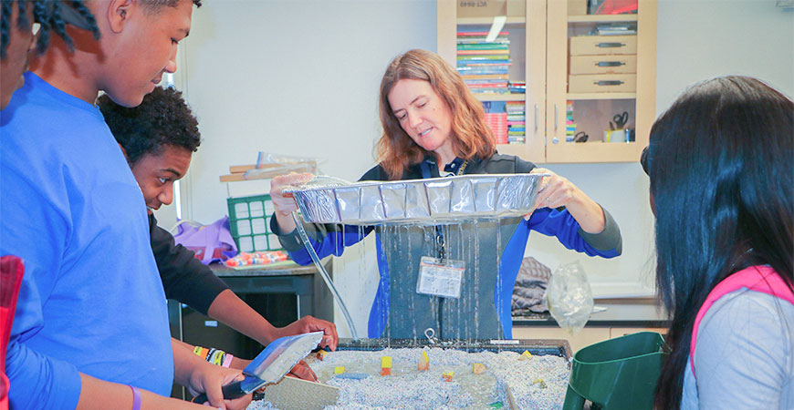

UC Merced Brings NSF ‘Computer Science for All’
Program to Merced Schools
September 21, 2020
By Leigh Bernacchi, UC Merced
The technology world is punctuated by startups, and UC Merced is “starting up” its own program to invigorate computer science education in the San Joaquin Valley.
The National Science Foundation awarded a $300,000, two-year grant to support START UP SJV, which stands for “STEM Teachers Alliance for Regional Tech thinking through Underrepresented Professional development in the San Joaquin Valley.”
Computer science Teaching Professor Angelo Kyrilov is leading the effort along with computer science Professor Stefano Carpin and Chelsea Arnold, the campus’s CalTeach program director and an assistant project scientist in environmental soil physics.
The three applied for the grant to address an issue they noticed in the classes they teach at UC Merced.
“Some of my students struggle with basic computing principles,” Kyrilov said. “They grasp the structure and goals, but do not engage in the beauty of computing. It’s like the difference between plunking piano keys and playing the piano with expression and control.”
Kyrilov worked with the Merced County Office of Education and Merced Union High School District and found that few high school students were taking, much less passing, the advanced placement exams. He created coding resources and engaged with students but realized a longer-term strategy would be to work with the teachers.
Through the new grant, UC Merced undergraduates can participate in a course to support middle and high school teachers trying new computer science curricula. The class, taught by Kyrilov, will answer computer science questions and help build a network of teachers and undergraduate students.
“When it comes to inspiring young minds, computer science is today’s Tinker Toys and ERECTOR sets,” School of Engineering Dean Mark Matsumoto said. “We want students to see what doors computer science can open for them in the future.”
“This exciting cross-school partnership focuses our shared expertise on one of our primary goals — to improve K-12 educational outcomes and train a skilled workforce for the San Joaquin Valley and beyond,” School of Natural Sciences Dean Betsy Dumont said. “It sets the stage for a wealth of future collaborations.”
Computer science and engineering is the second-largest undergraduate major at UC Merced, with more than 1,000 students enrolled per year. Not all of them will work for tech giants or start their own companies — many will become teachers, too.
Carpin, the founding chair of the Department of Computer Science and Engineering at UC Merced, said he’s happy to see computer science studies growing and expanding to middle and high school students, and Arnold said she is most excited about engaging area teachers.
“This program opens the door for some of our students to share their enthusiasm for computer science with Valley middle and high school students,” she said. “This program is a way to address the problem through enhanced content knowledge and a robust support system for our diverse teachers to help them be even more prepared when they enter the classroom to teach computer science.”
The new program will support computer science educators from middle and high schools through in-person and online professional development and support from UC Merced. They will also help UC Merced conduct research about how the students learn and engage with the curricula. Teacher recruitment begins in early 2021, and each participating teacher will receive a $2,000 stipend upon completing the program.
“Evaluating the program throughout will enable us to know what works and what doesn’t,” Kyrilov said.
Data will be collected and analyzed by ERC Data in Fresno, an external evaluation team specializing in educational programs — after all, scaling up is what successful startups do.
For Professor Josh Viers , director of UC Merced’s Center for Information Technology Research in the Interest of Society (CITRIS), the proposal aligns with much of the work he and his colleagues have been conducting since the university began.
“We’re participating in a grand experiment: Can a large public university make a difference in the San Joaquin Valley? This NSF award is validation that our university is creating pathways for students to succeed in the jobs of the future and to give back to the communities from which they came,” he said.
CITRIS, which runs a middle school NexTech Robotics program taught by UC Merced students, supported the proposal development because of its focus on technology and dedication to improving diversity in technology.
Designed to address the shortage of math and science teachers in California’s schools, especially the San Joaquin Valley, CalTeach, which is part of the School of Natural Sciences, has graduated more than 150 UC Merced students and has alumni teaching from Mariposa to the Bay Area and from Los Angeles to Sacramento.
“We’re seeing an increase in computer science majors in our education classes,” Arnold said. “Our students gain exposure to teaching through many of our outreach programs, from Bobcat Summer Academy to the CalTeach Learning Lab, and they can see the potential to change young people’s lives through education.”